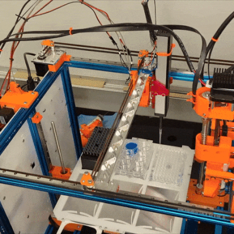

🔬🧪 Science Jubilee ⚡⚙️
Controlling Jubilees for Science!


Use an open-source toolchanger to do science

This repository hosts the core software to build and control a Jubilee for scientific applications: a Python interface for motion, tool-changing, and navigating labware. Concrete hardware tools, lab decks, digital-twin viewers, and vision/analysis pipelines are not bundled here — they ship as independent plugin packages (see “Architecture: core + plugins” below) discovered at runtime. tool_library/ in this repo only keeps a template/ for scaffolding new tool hardware and an old/ archive of pre-plugin tool designs; browse the tool-plugin repos for ready-to-use tools like OT-2 pipettes, syringes, and cameras. We hope you will build new tools/decks/pipelines for your application and contribute them back to the community for others to use and extend 🛠️
Check out the Documentation to get started!
Architecture: core + plugins
science-jubilee itself is a small core: motion control, the tool-changer,
deck/labware navigation, and MachineSession. Everything experiment- or
hardware-specific — a physical tool, a lab deck, a digital twin, a vision
pipeline — ships as a separate, independently-installable plugin package
that the core discovers at runtime via Python
entry points
(importlib.metadata). Nothing in core imports a plugin by name; plugins
register themselves, core looks them up by key.
Core (src/science_jubilee/)
Module |
Responsibility |
|---|---|
|
|
|
|
|
Base classes + built-in fallback definitions |
|
Base |
|
|
|
Tool g-code generation ( |
|
|
|
Core test suite only (motion, tool-changer, macro expansion, digital-twin connection, deck/labware) |
Plugins (installed separately, discovered by entry point)
Domain |
Entry-point group(s) |
Fallback when nothing is installed |
|---|---|---|
Hardware tools |
|
none — |
Labware definitions |
|
built-in |
Deck definitions |
|
built-in |
Digital twin (Blender interface) |
|
none — |
Computer vision |
(plain pip dependency, no entry point) |
n/a — install a vision package directly, e.g. |
A tool plugin declares itself like this in its pyproject.toml:
[project.entry-points."science_jubilee.tools"]
csl_fluo_tool = "csl_fluo_tool:FluorescenceTool"
[project.entry-points."science_jubilee.tools.mocks"]
csl_fluo_tool = "csl_fluo_tool:FluorescenceToolMock"
[project.entry-points."science_jubilee.tools.configs"]
csl_fluo_tool = "csl_fluo_tool.configs:__path__"
[project.entry-points."science_jubilee.tools.twin_assets"]
csl_fluo_tool = "csl_fluo_tool.twin_assets:__path__"
The entry-point name (csl_fluo_tool above) is the TOOL_KEY used
everywhere: in M563 S"..." on the Duet, when looking up mocks/configs/twin
assets, and as the identifier reported by ToolChanger. Keys must be
lowercase [a-z][a-z0-9_]*, ≤15 characters (RepRapFirmware’s M563 S limit),
and can’t collide with a small set of names reserved for the core repo
(camera, light, neopixel, toolhead_cam, inoculator — namespace yours,
e.g. csl_camera).
Deck and labware plugins are simpler: register a science_jubilee.deck or
science_jubilee.labware entry point whose callable returns a directory path
containing the JSON definitions — no base class to subclass.
Vision/analysis plugins need no entry point at all: they’re just pip packages
that depend on science-jubilee and import its HAL/navigation APIs directly
(see vision-measure-plant and vision-duckweed-tracking for reference
implementations of this pattern).
Path discovery & fallback
Everything path-related follows the same priority order: explicit path/env var → installed plugin → built-in default.
Deck JSON:
Deck.__post_init__searchespath=(if given) → every directory registered under thescience_jubilee.deckentry-point group →decks/example_deck/(built-in). RaisesFileNotFoundErrornaming all searched directories if nothing matches.Labware JSON: same priority, ending in
labware/labware_definition/.Camera calibration: pass
calib_file=explicitly, or setJUBILEE_CAMERA_CALIB(resolved relative to the.envfile’s directory); falls back toscience_jubilee._paths.camera_params_yaml()(the core repo’s shippedcalibration/camera_params.yaml) if omitted.Digital twin:
launch_twin(script_name, search_dir=None)— ifsearch_diris omitted, looks up thescience_jubilee.digital_twinentry point (installed viajubilee-blender-twin); raises if neither is available.Experiment files (deck.json, labware JSONs, gcode logs): driven entirely by env vars read by
MachineSession.from_env()— seeJUBILEE_*in the “MachineSession” section below. There is no built-in fallback for these; they’re expected to live in your own experiment folder, not in this repo.
Installing
pip install science-jubilee
# or, for a checked-out copy:
pip install -e .
Optional extras (see setup.cfg for the full list):
pip install "science-jubilee[camera]" # opencv, matplotlib, picamera (RPi)
pip install "science-jubilee[scripts]" # sacred-based experiment scripts
pip install "science-jubilee[testing]" # pytest, pre-commit, tox, sphinx
Then install whatever plugins your setup needs, independently:
pip install -e path/to/your-tool-plugin # hardware tool (science_jubilee.tools entry point)
pip install -e path/to/vision-measure-plant # vision/analysis pipeline (plain dependency)
pip install jubilee-blender-twin # digital twin viewer
Overview
Jubilee is an open-source & extensible multi-tool motion platform — if that doesn’t mean much to you, you can think of it as a 3D printer that can change its tools. You can read about Jubilee more generally at the project page. This repository is designed to be used with the Jubilee platform outfitted with tools for laboratory automation.
Using science_jubilee
Import the HAL/navigation pieces you need and wire them up yourself, or use
MachineSession (recommended, see below) to do it in one call. For example,
using the HAL layer directly with an Inoculator tool:
from science_jubilee.hal.transport.http import HTTPTransport
from science_jubilee.hal.motion_driver import MotionDriver
from science_jubilee.hal.tool_changer import ToolChanger
from science_jubilee.navigation.deck_navigation import DeckNavigator
from science_jubilee.decks.Deck import Deck
from science_jubilee.tools.unique_tools.Inoculator import Inoculator
transport = HTTPTransport(address="192.168.1.2")
driver = MotionDriver(transport)
tool_changer = ToolChanger(transport)
deck = Deck("deck", path="my_experiment/") # your deck.json + labware JSONs
nav = DeckNavigator(driver=driver, deck=deck)
tool_changer.pickup_tool(0) # tool index from your M563 config
nav.move_to_well(slot="0", well="A1")
MachineSession (recommended entry point)
MachineSession wires the full stack — transport, motion, tool-changer, deck navigator, camera, and light — into a single object.
From a .env file (recommended)
Put experiment-specific settings in a .env file next to your notebook or script:
JUBILEE_TRANSPORT=mock # or: hardware
JUBILEE_ADDRESS=192.168.1.2 # required when TRANSPORT=hardware
JUBILEE_EXPERIMENT_DIR=my_exp/ # folder with deck.json, labware JSONs, gcode files
JUBILEE_DECK_DEF=deck # stem of the deck JSON (auto-detected if omitted)
JUBILEE_PIPELINE_DATA= # override for pipeline_data/ (gcode logs, snapshot, traces)
JUBILEE_CAMERA_ADDRESS= # camera server IP (hardware only)
JUBILEE_NEOPIXEL_ADDRESS= # LED server IP (hardware only)
JUBILEE_CAMERA_CALIB=calibration/camera_params.yaml
Then build the session:
from science_jubilee.machine_session import MachineSession
session = MachineSession.from_env(".env")
session.free_navigator.move_to(x=100, y=50)
session.navigator.move_to_well(slot="0", well="A1")
Explicit constructors
# Mock (no hardware required)
session = MachineSession.mock(
deck_def="deck",
experiment_dir=Path("my_exp/"),
)
# Real machine
session = MachineSession.hardware(
address="192.168.1.2",
deck_def="deck",
experiment_dir=Path("my_exp/"),
camera_address="192.168.1.3",
led_address="192.168.1.4",
)
Context manager
with MachineSession.from_env(".env") as s:
s.free_navigator.home_all()
Key attributes:
Attribute |
Type |
Description |
|---|---|---|
|
|
Low-level G-code motion |
|
|
Pick and park tools |
|
|
Well-addressed deck navigation (requires |
|
|
Coordinate-based navigation |
|
|
Camera capture |
|
|
LED ring control |
Setting up a new tool with the HAL layer
For tool setup and calibration, a lower-level interface based on MotionDriver is available. It gives direct control over motion and handles generating the Duet firmware files needed for each tool (tpre, tpost, tfree):
from science_jubilee.hal.transport.http import HTTPTransport
from science_jubilee.hal.motion_driver import MotionDriver
from science_jubilee.hal.tool_changer import ToolChanger
from science_jubilee.navigation import FreeNavigator
from science_jubilee.calibration.tool_gfiles import generate_tool_gfiles
# Connect
transport = HTTPTransport(address="10.0.3.48")
driver = MotionDriver(transport)
tc = ToolChanger(transport)
nav = FreeNavigator(driver, tc)
# Home the machine
nav.home_all() # runs homeall.g on the Duet
# Jog to find the parking post position
nav.move_to(z=150)
nav.move_to(x=150, y=150)
nav.jog(x=5, y=-2) # fine-tune with relative moves
print(nav.get_position()) # {"X": ..., "Y": ..., "Z": ...}
# Once you have your parking coordinates:
tool_number = 0
x_park = 120.0 # X position of the parking post
y_park = 295.0 # Y position where tool is locked/released
y_clear = 260.0 # Y position safely clear of all parking posts
manhattan_offset = 60.0 # approach offset added to x_park in tpre
# Generate tpre0.g, tpost0.g, tfree0.g and upload them to 0:/sys/ in one call
generate_tool_gfiles(
tool_number=tool_number,
x_park=x_park,
y_park=y_park,
y_clear=y_clear,
manhattan_offset=manhattan_offset,
transport=transport, # omit to only write files locally
)
The generated files are written to firmware/sys/ locally and, when transport is provided, uploaded directly to 0:/sys/ on the Duet — no copy-paste into DWC required.
Developing a plugin
Hardware tool: run the scaffolder —
create-tool-plugin(installed via thescriptsextra) prompts for aTOOL_KEYand display name and produces a ready-to-edit plugin repo, zipped up, containing:<dist-name>/ ├── pyproject.toml # the four science_jubilee.tools.* entry points, pre-filled ├── README.md # install + usage stub, ready to fill in ├── .gitignore ├── src/<pkg>/ │ ├── __init__.py # exports {Tool, ToolMock} │ ├── tool.py # Tool subclass stub — implement run() │ ├── mock.py # Mock subclass stub │ ├── _paths.py # get_twin_assets_dir() helper │ └── configs/<tool_key>.json ├── tests/test_tool.py # TOOL_KEY / subclass / mock-key assertions, generated ├── templates/ # tpre/tpost/tfree .g.template files to fill in with │ # parking-post coordinates, + wedge_plate.blend, park_post_47.blend ├── calibration/ # copied straight from this repo's calibration/ folder: │ ├── ToolAlignmentXY.ipynb # jog + record XY tool offset against a reference pin │ ├── SetToolParkingPositions.ipynb # jog + record parking-post X/Y/clear coordinates │ ├── CalibrationControlPanel.py # Jupyter widget control panel used by the notebooks │ └── CalibrationJoystick.py # PS4-controller jog input, alternative to widget sliders └── twin_assets/ # empty — drop 3D assets for the digital twin hereUnzip it,
cdin,pip install -e ., runpytest, then work through the two calibration notebooks before writingtool.py’srun()method. The notebooks are the actual calibration workflow — they’re not optional boilerplate, they’re how you get thetpre/tpost/tfreeparking coordinates and XY offset that go intotemplates/and get uploaded to0:/sys/on the Duet.Deck / labware: no scaffolder needed — just register a
science_jubilee.deckorscience_jubilee.labwareentry point pointing at a directory of JSON definitions.Digital twin: register a
science_jubilee.digital_twinentry point returning the directory to search for twin scripts (seejubilee-blender-twin).Vision / analysis pipeline: no entry point, no naming rules — just a regular package depending on
science-jubileethat importsHAL,navigation, andmachine_sessiondirectly.vision-measure-plant(Gaussian-splatting reconstruction + Marigold depth pipelines) andvision-duckweed-tracking(frond detection + RRT pickup planning) are reference implementations of this pattern.
Repository contents
docs/ # Sphinx documentation source
firmware/ # Duet/RepRapFirmware sys + macro files
pipeline_data/ # generated at runtime: gcode_logs/, machine_state.json, traces/ (git-ignored)
images/ # calibration & sample images
tool_library/ # template/ for scaffolding new tool hardware, old/ pre-plugin archive
src/science_jubilee/ # core package — see table above
tests/ # core test suite — see "Running tests" below for the folder breakdown
Vision pipelines, extra tool plugins, and the digital twin live in their own
repositories (vision-measure-plant, vision-duckweed-tracking,
jubilee-blender-twin, individual tool-plugin repos) — install them
alongside science-jubilee, don’t vendor them into this repo.
Development
Setup
pip install -e ".[testing,scripts]"
pre-commit install # registers hooks in .git/hooks — run once per clone
Pre-commit hooks
Every git commit automatically runs the following checks on staged files:
Hook |
What it does |
|---|---|
|
Whitespace cleanup |
|
Validates Python syntax |
|
Validates JSON files |
|
Validates YAML files |
|
Blocks committed |
|
Removes unused imports |
|
Sorts imports (black-compatible profile) |
|
Formats Python code |
|
Runs the full test suite in mock mode |
Most hooks are auto-fixers: they modify files in-place and then block the commit so you can review and re-stage the changes.
Commit workflow
git add -u # stage all changes first — important!
git commit -m "message" # hooks run automatically
If hooks modify files (black, isort, autoflake), the commit is blocked. Re-stage and retry:
git add -u
git commit -m "message" # hooks now pass on the already-formatted files
git commit → black modifies file.py → commit blocked
↓
file.py now has unstaged changes
↓
git add -u → those fixes are now staged
↓
git commit → hooks pass (file already formatted) → committed ✓
Tip: always
git add -ubefore committing.
To run hooks manually on all files (useful before a PR):
pre-commit run --all-files
Running tests
tests/ mirrors the layout of src/science_jubilee/ and is core-only — no
plugin, tool, or vision code is tested from here (each plugin ships its own
tests/, e.g. the test_tool.py generated by create-tool-plugin).
tests/
├── conftest.py # jubilee_env/transport/motion/tool_changer/navigator/camera/light fixtures
├── README.md # full fixture table, markers, and troubleshooting guide
├── machine_basic/ # connectivity: connect, available_axes, positions, http requests, machine_summary
├── machine_movement/ # homing, deck navigation, corners path, tool-changer API
├── tools/ # camera, light, tool registry/discovery
├── digital_twin/ # mock-only: recording transport, macro expansion, blender connection
├── ingredients/ # snake-scan and acquisition-test Sacred pipelines
└── utils/ # currently empty — no tests here yet
pytest --jubilee-env mock # mock mode, no hardware needed
pytest --jubilee-env hardware # requires a connected Jubilee at JUBILEE_ADDRESS
pytest -m "not invasive" # skip tests that move the machine
pytest -m primary # connectivity checks only
See tests/README.md for the full fixture reference, the primary /
secondary / invasive marker meanings, and hardware troubleshooting tips.
Note
This project has been set up using PyScaffold 4.5. For details and usage information on PyScaffold see https://pyscaffold.org/.